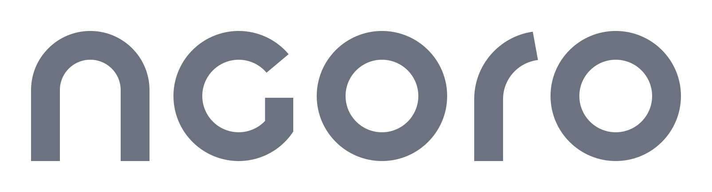
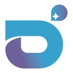
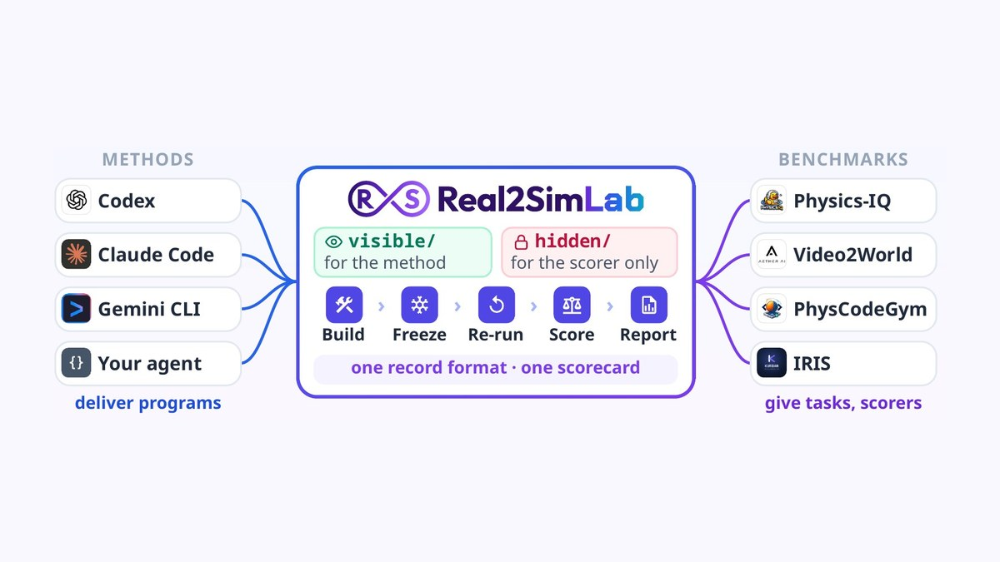
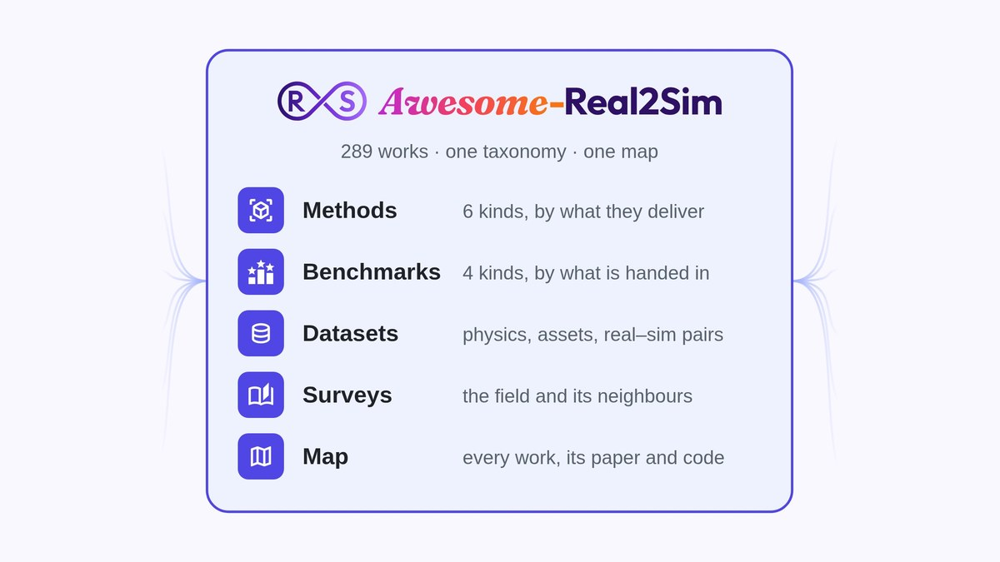
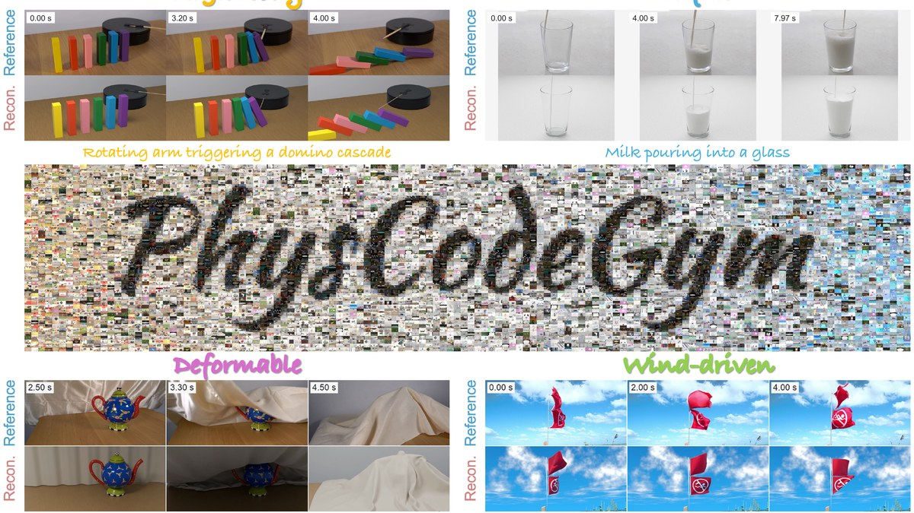
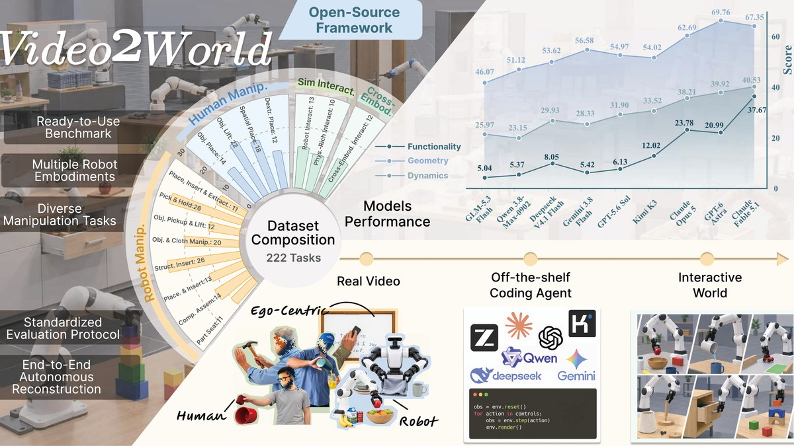

Real2SimHub: a community to build the infrastructure of real-to-simulation together.

- Run your method or bring your benchmark to Real2SimLab.

- Add a paper to the map or share a blog.


Contributors come from:
- Peking University

Ngoro Robotics- Tsinghua University
- The University of Hong Kong
- National University of Singapore
- Shanghai Jiao Tong University

AgiBot
- University of Rochester
- UC San Diego
- BIGAI
- HKUST (Guangzhou)
- Southeast University
- UESTC AI Club
Discover our research
- Real2SimLab: A Unified Platform for Real-to-Simulation TransferThe paper on Real2SimLab and Awesome-Real2Sim · arXiv:2611.34849
- Real2SimHub/Real2SimLabThe platform: any method, any benchmark, one scorecard
- Real2SimLab documentationQuickstart, the six benchmarks and a synthetic suite, guides for evaluation and training, and the specification
- Real2SimHub/Awesome-Real2SimA research map of nearly 300 real-to-simulation papers, sorted by what each delivers
Blog

PKU-VaLuE-LabPlatformReal2SimLabA unified platform for real-to-simulation.
PKU-VaLuE-LabResearch mapAwesome-Real2SimA research map of nearly 300 papers.
SJTUBenchmarkPhysCodeGymCoding agents rebuild 156 videos as Blender programs, checked for physical validity.
Aether AIBenchmarkVideo2WorldA coding agent turns an embodied video into an interactive simulated world. USCMethod3DCodeVerseA dataset of 3D programs, and agents that check and refine what coding agents build.
USCMethod3DCodeVerseA dataset of 3D programs, and agents that check and refine what coding agents build. UBCMethodAgentic Real2SimVision-language agents turn robot recordings into MuJoCo episode twins.
UBCMethodAgentic Real2SimVision-language agents turn robot recordings into MuJoCo episode twins.
Connect with us


Contributors
- Haorui Chen
- Chenhang Cui
- Jie Huang
- Jinfa Huang
- Rui Huang
- Zixiang Jiang
- Xiang Li
- Ruixun Liu
- Tianyi Liu
- Zheng Lu
- Yunhe Ni
- Kevin Shen
- Zitong Shen
- Fangyuan Shi
- Qiwei Wu
- Yidi Wu
- Zeyu Xia
- Mengyu Yang
- TianZe Zhang
- Yongchang Zhang
- Guangyu Zhao
- Yiwu Zhong
- Ningyu Zhou
- Bofan Zhu
Listed alphabetically by surname.